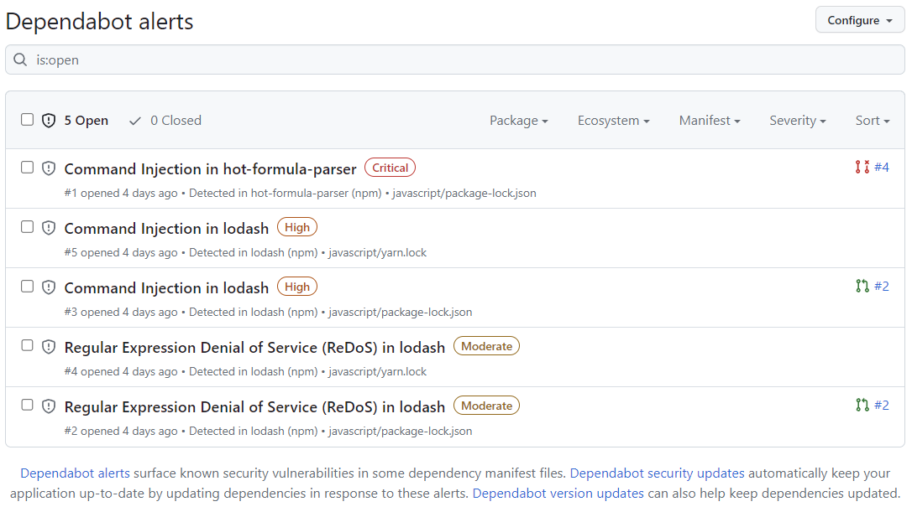
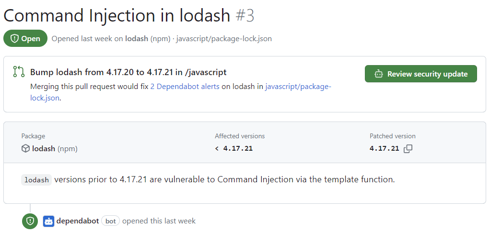
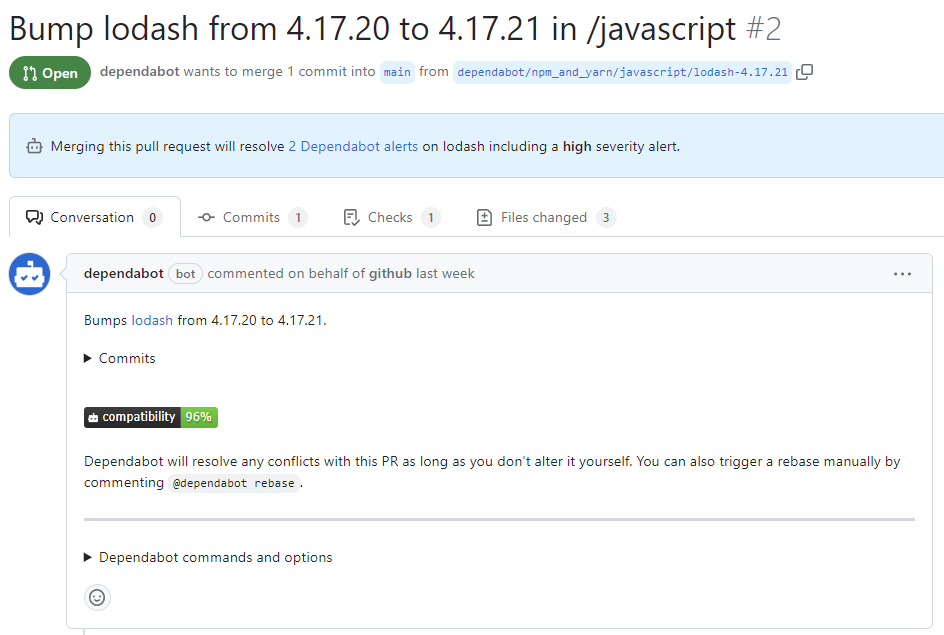
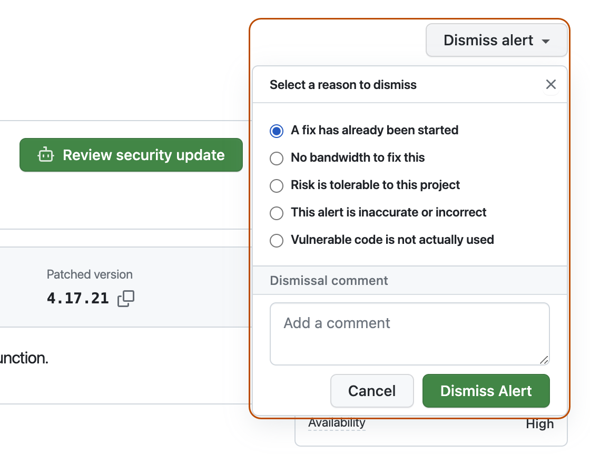

Find and fix vulnerable dependencies you rely on with Dependabot.
About Dependabot
This quickstart guide walks you through setting up and enabling Dependabot, viewing Dependabot alerts, and updating your repository to use a secure version of the dependency.
Dependabot consists of three different features that help you manage your dependencies:
Dependabot alerts: Inform you about vulnerabilities in the dependencies that you use in your repository.
Dependabot security updates: Automatically raise pull requests to update the dependencies you use that have known security vulnerabilities.
Dependabot version updates: Automatically raise pull requests to keep your dependencies up-to-date.
Prerequisites
For the purpose of this guide, we're going to use a demo repository to illustrate how Dependabot finds vulnerabilities in dependencies, where you can see Dependabot alerts on GitHub, and how you can explore, fix, or dismiss these alerts.
Select an owner (you can select your GitHub personal account) and type a repository name. For more information about forking repositories, see Fork a repository.
Click Create fork.
Enabling Dependabot for your repository
You need to follow the steps below on the repository you forked in Prerequisites.
On GitHub, navigate to the main page of the repository.
Under your repository name, click Settings. If you cannot see the "Settings" tab, select the dropdown menu, then click Settings.
In the "Security" section of the sidebar, click Advanced Security.
Under "Dependabot", click Enable for Dependabot alerts, Dependabot security updates, and Dependabot version updates.
If you clicked Enable for Dependabot version updates, you can edit the default dependabot.yml configuration file that GitHub creates for you in the /.github directory of your repository.
To enable Dependabot version updates for your repository, you typically configure this file to suit your needs by editing the default file, and committing your changes. You can refer to the snippet provided in Configuring Dependabot version updates for an example.
Note
If the dependency graph is not already enabled for the repository, GitHub will enable it automatically when you enable Dependabot.
If Dependabot alerts are enabled for a repository, you can view Dependabot alerts on the Security and quality tab for the repository. You can use the forked repository that you enabled Dependabot alerts on in the previous section.
On GitHub, navigate to the main page of the repository.
Under the repository name, click the Security and quality tab. If you cannot see the " Security and quality" tab, select the dropdown menu, and then click Security and quality.
In the "Findings" section of the sidebar, select the Dependabot dropdown menu, then click Vulnerabilities.
Review the open alerts on the Dependabot alerts page. By default, the page displays the Open tab, listing the open alerts. (You'll be able to view any closed alerts by clicking Closed.)

You can filter Dependabot alerts in the list, using a variety of filters or labels. For more information, see Viewing and updating Dependabot alerts. You can also use Dependabot auto-triage rules to filter out false positive alerts or alerts you're not interested in. For more information, see About Dependabot auto-triage rules.
Click the "Command Injection in lodash" alert on the javascript/package-lock.json file. The details page for the alert will show the following information (note that some information may not apply to all alerts):
Whether Dependabot created a pull request that will fix the vulnerability. You can review the suggested security update by clicking Review security update.
Package involved
Affected versions
Patched version
Brief description of the vulnerability

Optionally, you can also explore the information on the right-side of the page. Some of the information shown in the screenshot may not apply to every alert.
Weaknesses: List of CWEs related to the vulnerability, if applicable
CVE ID: Unique CVE identifier for the vulnerability, if applicable
GHSA ID: Unique identifier of the corresponding advisory on the GitHub Advisory Database. For more information, see About the GitHub Advisory database.
Option to navigate to the advisory on the GitHub Advisory Database
Option to see all of your repositories that are affected by this vulnerability
Option to suggest improvements for this advisory on the GitHub Advisory Database
You can fix or dismiss Dependabot alerts on GitHub. Let's continue to use the forked repository as an example, and the "Command Injection in lodash" alert described in the previous section.
Click the "Command Injection in lodash" alert on the javascript/package-lock.json file.
Review the alert. You can:
Review the suggested security update by clicking Review security update. This will open the pull request generated by Dependabot with the security fix.

On the pull request description, you can click Commits to explore the commits included in the pull request.
You can also click Dependabot commands and options to learn about the commands that you can use to interact with the pull request.
When you're ready to update your dependency and resolve the vulnerability, merge the pull request.
If you decide that you want to dismiss the alert
Go back to the alert details page.
On the top-right corner, click Dismiss alert.

Select a reason for dismissing the alert.
Optionally, add a dismissal comment. The dismissal comment will be added to the alert timeline and can be used as justification during auditing and reporting.
Click Dismiss alert. The alert won't appear anymore in the Open tab of the alert list, and you are able to view it in the Closed tab.